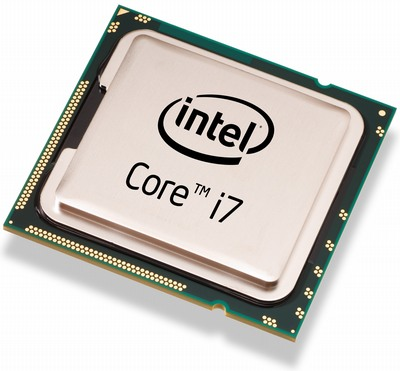

CPU

Η Κεντρική Μονάδα Επεξεργασίας - ΚΜΕ (αγγλικά: Central Processing Unit - CPU) είναι το κεντρικό εξάρτημα ενός ηλεκτρονικού υπολογιστή,
και συχνά αναφέρεται απλά ως επεξεργαστής. Η ΚΜΕ ελέγχει τη λειτουργία του υπολογιστή και εκτελεί τις λειτουργίες επεξεργασίας δεδομένων.
Αν η ΚΜΕ αποτελείται από ένα μόνο ολοκληρωμένο κύκλωμα τότε ονομάζεται μικροεπεξεργαστής (microprocessor) ή μικροελεγκτής (microcontroller).
Οι επεξεργαστές δεν σχετίζονται αποκλειστικά με τους ηλεκτρονικούς υπολογιστές καθώς πλέον ενσωματώνονται και σε πολλές ηλεκτρονικές συσκευές
όπως κινητά τηλέφωνα, ψηφιακές φωτογραφικές μηχανές και βιντεοκάμερες. Επεξεργαστές ενσωματώνονται σε κάθε είδους συσκευής στην οποία απαιτείται
ύπαρξη υπολογιστικής ικανότητας.